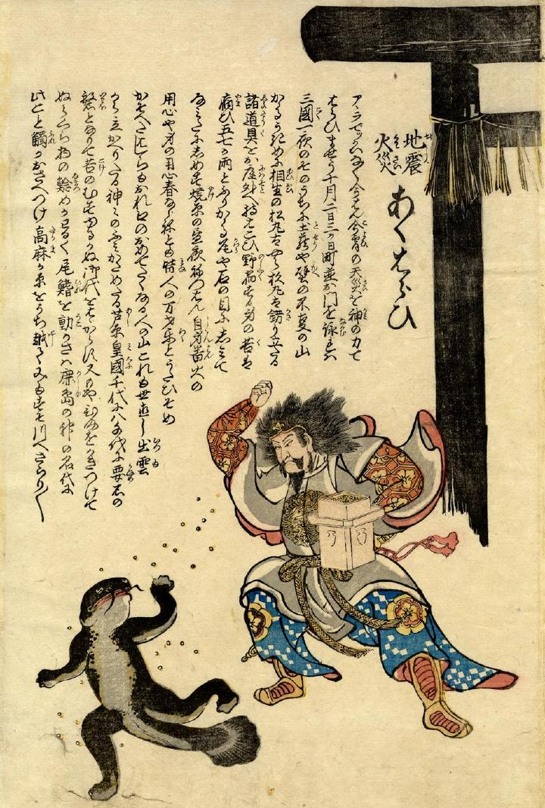

← 图鉴索引

鹿島明神に豆で責められる鯰。慌てふためいて逃げている。
出典：親書誌：U426_nichibunken_0242：地震火災あくはらい；ジシンカサイアクハライ／日付：2011／資源識別子：U426_nichibunken_0242_0001_0000
Copyright (c)2010- International Research Center for Japanese Studies, Kyoto, Japan. All rights reserved.